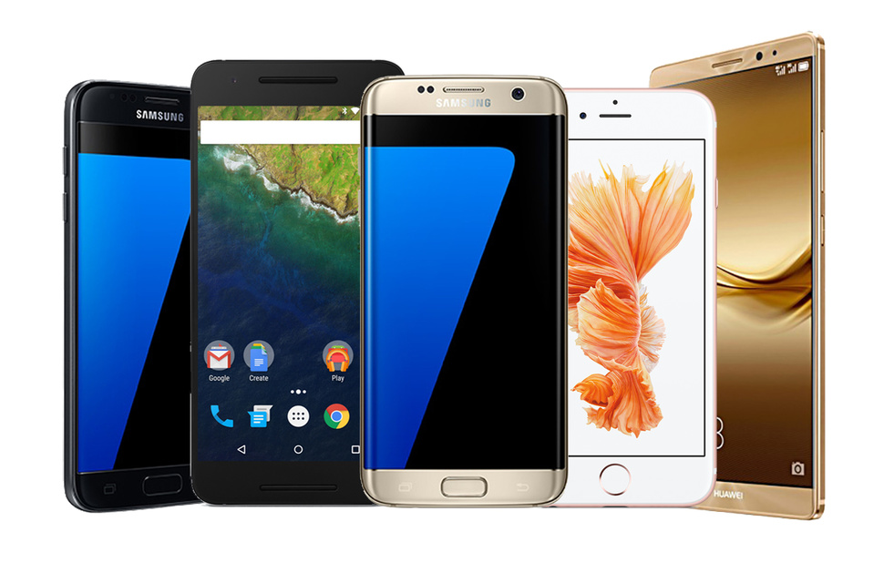
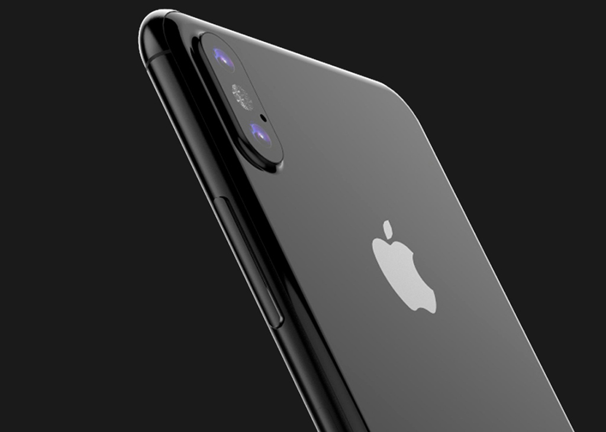

Smartphone
A smartphone is a handheld personal computer with a mobile operating system and an integrated mobile broadband cellular network connection for voice, SMS, and Internet data communication; most if not all smartphones also support Wi-Fi. Smartphones are typically pocket-sized, as opposed to tablets, which are much larger. They are able to run a variety of software components, known as “apps”. Most basic apps (e.g. event calendar, camera, web browser) come pre-installed with the system, while others are available for download from places like the Google Play Store or Apple App Store. Apps can receive bug fixes and gain additional functionality through software updates; similarly, operating s ystems are able to update. Modern smartphones have a touchscreen color display with a graphical user interface that covers the front surface and enables the user to use a virtual keyboard to type and press onscreen icons to activate "app" features. Mobile payment is now a common theme amongst most smartphones.
Today, smartphones largely fulfill most people's needs for a telephone, digital camera and video camera, GPS navigation, a media player, clock, news, calculator, web browser, handheld video game player, flashlight, compass, an address book, note-taking, digital messaging, an event calendar, etc. Typical smartphones will include one or more of the following sensors: magnetometer, proximity sensor, barometer, gyroscope, or accelerometer. Since 2010, smartphones adopted integrated virtual assistants, such as Apple Siri, Amazon Alexa, Google Assistant, Microsoft Cortana, BlackBerry Assistant and Samsung Bixby. Most smartphones produced from 2012 onward have high-speed mobile broadband 4G LTE capability. In 1999, the Japanese firm NTT DoCoMo released the first smartphones to achieve mass adoption within a country. Smartphones became widespread in the late 2000s. In the third quarter of 2012, one billion smartphones were in use worldwide. Global smartphone sales surpassed the sales figures for feature phones in early 2013.
 |
 |  |